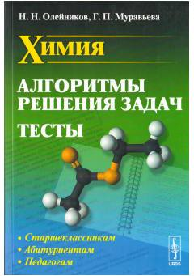

ХАKimyo fanidan masalalarni yechish uchun samarali algoritmlar va testlar to'plami.
Ushbu o'quv qo'llanma kimyo fanidan masalalarni yechish uchun tizimli algoritmlar va tahliliy yondashuvlarni taqdim etadi. Kitob nazariy kirishlar, batafsil yechimlar va mustaqil ishlash uchun test topshiriqlarini o'z ichiga oladi. Qo'llanma abituriyentlar, maktab o'quvchilari va o'qituvchilar uchun mo'ljallangan.